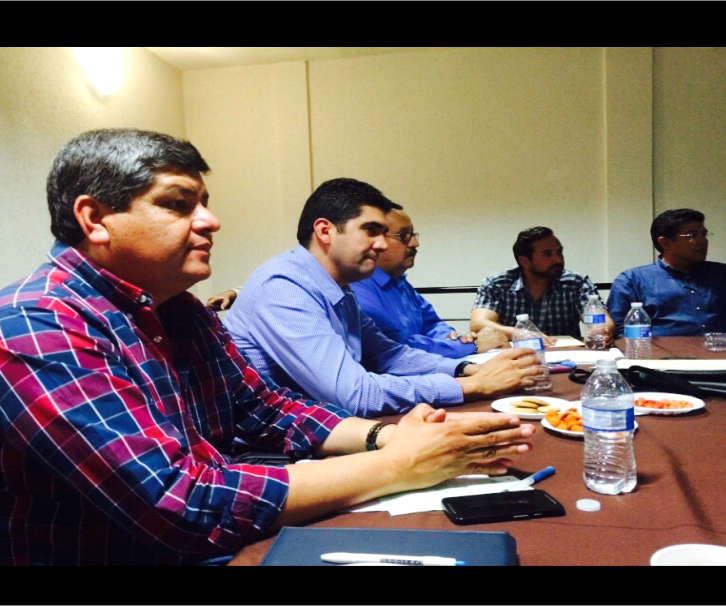
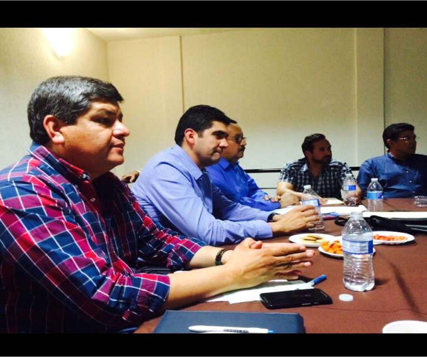
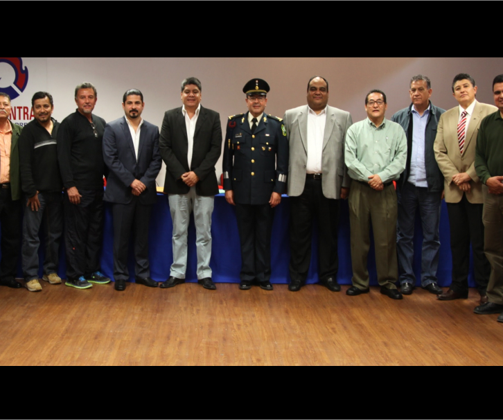
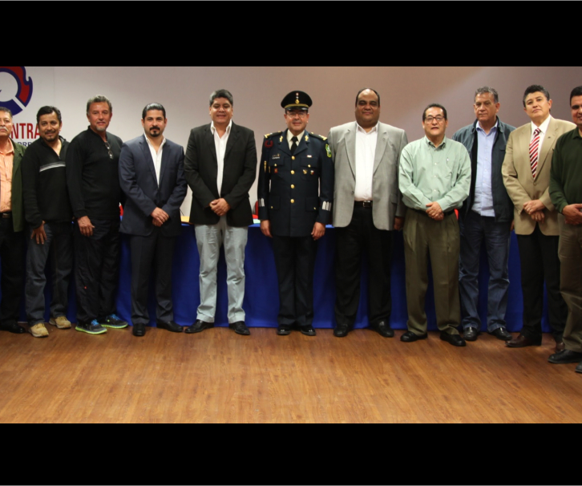

PRIMERAMENTE HAGO SABER QUE A TRAVÉS DEL SECRETARIO SE CONVOCO A 12 (DOCE) REUNIONES ORDINARIAS Y A 10 (DIEZ) EXTRAORDINARIAS. EN ESTAS ÚLTIMAS ESTUVIERON PRESENTES LOS SIGUENTES INVITADOS:
LIC. JORGE LUIS MORÁN DELGADO, SECRETARIO DEL AYUNTAMIENTO DE TORREÓN.
ING. MIGUEL ÁNGEL RIQUELME SOLÍS, ALCALDE DEL AYUNTAMIENTO DE TORREÓN.
LIC. JESÚS DE LEÓN TELLO, DIPUTADO LOCAL DEL CONGRESO DEL ESTADO DE COAHUILA.
TAMBIEN NOS ACOMPAÑARON:
C.P. RICARDO HAMDAN HUERECA, DIRECTOR DE TRÁNSITO Y VIALIDAD DE TORREÓN,
LIC. JESÚS JASSO FRAIRE, PRESIDENTE DE TRIBUNALES ADMINISTRATIVOS DE TORREÓN EL CUAL NOS VISITO EN DOS OCASIONES.
GENERAL DE BRIGADA D.E.M. SERGIO ALBERTO MARTINEZ CASTUERA, COMANDANTE DEL MANDO ESPECIAL LAGUNA.
LIC. HOMERO RAMOS GLORIA, PROCURADOR GENERAL DE JUSTICIA DEL ESTADO DE COAHUILA, ACOMPAÑADO DEL LIC. GERARDO MÁRQUEZ GUEVARA, DELEGADO DE LA PGJE DELEGACIÓN I Y LA LIC. AIKO MYUKI RENDÓN CARREÓN DELEGADA PGJE DELEGACIÓN II.
C. JOSÉ ELÍAS GÁNEM GUERRERO, DIRECTOR DE PREVENCIÓN SOCIAL DEL DELITO DE TORREÓN.
LIC. DAVID OMAR SIFUENTES BOCARDO, SEGUNDO VISITADOR REGIONAL DE LA COMISIÓN DE DERECHOS HUMANOS DEL ESTADO DE COAHUILA.
ES PROPIO HACER MENCION QUE EN TODAS LAS REUNIONES ORDINARIAS SE PRESENTO A LOS CONSEJEROS, UN INFORME PORMENORIZADO DE LAS TAREAS PROPIAS DEL PRESIDENTE, DESEMPEÑADAS EN EL TIEMPO TRANSCURRIDO ENTRE CADA UNA DE LAS JUNTAS.
AL INICIO DE LA GESTION DEL AÑO 2015 Y TOMANDO EN CUENTA LAS ATRIBUCIONES QUE LE CONFIERE AL PRESIDENTE EL ARTICULO 40 FRACCIONES VIII Y IX DEL REGLAMENTO INTERIOR, DESIGNÉ AL VICEPRESIDENTE, SECRETARIO Y TESORERO Y PROPUSE DE ENTRE LOS MIEMBROS DEL CONSEJO CIUDADANO DE SEGURIDAD PÚBLICA A LOS INTEGRANTES DE LAS DISTINTAS COMISIONES.
TAMBIEN SE LES DIO LA BIENVENIDA Y SE LES TOMO LA PROTESTA A (10) (DIEZ) REPRESENTANTES, QUE FUERON PROPUESTOS POR DIVERSOS ORGANISMOS QUE CONFORMAN EL CONSEJO CIUDADANO, ASI COMO INGRESARON (4) NUEVOS ORGANISMOS.
REPRESENTE AL CONSEJO CIUDADANO DE SEGURIDAD PÚBLICA ANTE LAS CÁMARAS, ORGANISMOS Y AUTORIDADES CADA VEZ QUE FUE NECESARIO, ENTRE LO MÁS RELEVANTE :
-ASISTIMOS 8 (OCHO) JUNTAS QUE CELEBRO EL CONSEJO LAGUNERO DE LA INICIATIVA PRIVADA “CLIP”, EN DONDE SE PRESENTO UN INFORME QUINCENAL DE ACTIVIDADES REALIZADAS POR EL CONSEJO DE SEGURIDAD.
-ASI COMO TAMBIEN SE REALIZO UN CURSO NOMBRADO “SESION DE PLANEACION Y ESTRATEGIAS PARA EL CONSEJO CIUDADANO DE SEGURIDAD PUBLICA, IMPARTIDO POR EL DR. PEDRO MANUEL FACIO LICERA.
-ASI COMO UNA CAPACITACION CON LA LIC. EDNA PATRICIA CEPEDA MORALES, COORDINADORA GENERAL DE ANALISIS DE INFORMACION Y DE INTELIGENCIA PATRIMONIAL Y ECONOMICA DE LA PROCURADURIA GENERAL DE JUSTICIA DEL ESTADO DE COAHUILA.
ASISTIMOS A 10 (DIEZ) REUNIONES QUE CELEBRO EL GRUPO EMPRESARIAL LAGUNERO “GEL”.
ASISTÍ A 8 (OCHO) REUNIONES DE EVALUACIÓN DE LOS INDICES DELICTIVOS DE TORREÓN, CON LAS AUTORIDADES REALIZADAS CASI SIEMPRE LOS DOMINGOS.
ESTUVE EN DIVERSAS ENTREVISTAS EN RADIO Y TELEVISIÓN, ENTRE ELLAS GREM, PROGRAMA CAMBIOS, TELEVISA TORREÓN, MULTIMEDIOS LAGUNA.
ACUDIMOS A LA REUNIÓN DEL CLUB ROTARIO, EN LA CUAL SE LES HIZO LA INVITACIÓN A PARTICIPAR EN EL CONSEJO CIUDADANO.
VISITAMOS AL LIC. JESÚS JASSO FRAIRE, EN TRIBUNALES ADMISTRATIVOS MUNICIPALES DE TORREÓN.
NOS REUNIMOS CON EL C.P. RICARDO HAMDAN HUERECA, DIRECTOR DE TRÁNSITO Y VIALIDAD DE TORREÓN.
PLATICAMOS CON EL LIC. JOSÉ LUIS DE LA PEÑA FLORES, DIRECTOR DE INSTITUTO SUPERIOR DE ESTUDIOS DE SEGURIDAD PÚBLICA DEL ESTADO DE COAHUILA.
VISITAMOS AL ING. RODOLFO QUINTANA DEL C-4 (066) EN SUS INSTALACIONES.
NOS REUNIMOS CON EL LIC. GERARDO MÁRQUEZ, DELEGADO DE LA PROCURADURIA GENERAL DE JUSTICIA DEL ESTADO DE COAHUILA.
FIRMAMOS UN CONVENIO QUE SE REALIZO CON EL CONSEJO CIUDADANO DE SEGURIDAD PÚBLICA DEL DISTRITO FEDERAL, EN EL CUAL SE ESTAN REALIZANDO PLATICAS CON TELMEX, ASÍ COMO AUTORIDADES DE TORREÓN Y LERDO PARA CREAR UNA NUEVA LÍNEA DE DENUNCIA CIUDADANAS Y AYUDAR A LAS LÍNEAS DE EMERGENCIA QUE ACTUALMENTE TIENEN LAS AUTORIDADES.
EN COMPAÑÍA DE MIEMBROS DE LA COMISIÓN, PARTICIPE EN LA APLICACIÓN DE EXAMENES ANTIDOPING A ELEMENTOS PERTENECIENTES A LA DIRECIÓN DE SEGURIDAD PÚBLICA MUNICIPAL DE FRANCISCO I. MADERO, COAHUILA
EN VARIAS OCASIONES ACOMPAÑE A LOS MIEMBROS DE DIFERENTES COMISIONES A VISITAR A LAS AUTORIDADES A TRATAR CUESTIONES REFERENTES A SUS FUNCIONES.
EN COMPAÑÍA DEL SECRETARIO, SE FIRMARON TODAS LAS ACTAS DE LAS SESIONES DEL CONSEJO CELEBRADAS EN ESTOS SEIS MESES DEL 2015, QUE CONTIENEN LOS ACUERDOS TOMADOS ALGUNAS VECES POR MAYORÍA ABSOLUTA DE VOTOS, Y EN OTRAS POR UNANIMIDAD, ESTAS MINUTAS SE ENCUENTRAN DEBIDAMENTE RESGUARDADAS EN LAS OFICINAS DEL CONSEJO.
POR SU PARTE, EL TESORERO RECAUDO LAS CUOTAS ORDINARIAS QUE APORTARON LOS MIEMBROS DEL CONSEJO CIUDADANO DE SEGURIDAD, A QUIENES SE LES EXPIDIERON LOS RESPECTIVOS RECIBOS DEDUCIBLES, ASI COMO LA APORTACION DEL MES DE ABRIL DE LA TESORERIA MUNICIAPAL DE TORREON Y QUE AL 30 DE JUNIO DEL 2015 SUMARON LA CANTIDAD DE $73,800.00; PAGO LOS GASTOS GENERALES EN QUE INCURRIO EL ORGANISMO Y TAMBIEN CADA MES PRESENTO UNA RELACION DE INGRESOS Y EGRESOS.
ADEMAS LES INFORMO QUE EL COMISARIO REALIZO EL SEGUIMIENTO DE LA MAYORIA DE LOS ACUERDOS TOMADOS EN LAS REUNIONES ORDINARIAS Y EXTRAORDINARIAS, Y QUE AQUELLAS RECOMENDACIONES Y ENCOMIENDAS QUE LES FUERON PROPUESTOS A LAS DIFERENTES AUTORIDADES, PROVINIERON DE LOS ACUERDOS TOMADOS EN LAS REUNIONES DEL CONSEJO.
POR ÚLTIMO LES MANIFIESTO QUE SE TRABAJA EN ARMONIA CON TODO EL CONSEJO EN ESPECIAL CON EL COMISARIO, CON QUIEN TENGO UNA RELACIÓN AMISTOSA Y SIN TENSIONES, ESTO PERMITE QUE NOS APOYARAMOS MUTUAMENTE EN EL CUMPLIMIENTO DE NUESTRAS RESPECTIVAS RESPONSABILIDADES.
A T E N T A M E N T E.
ARQ. OSCAR EUSEBIO SOTO SANCHEZ
PRESIDENTE


 

 
